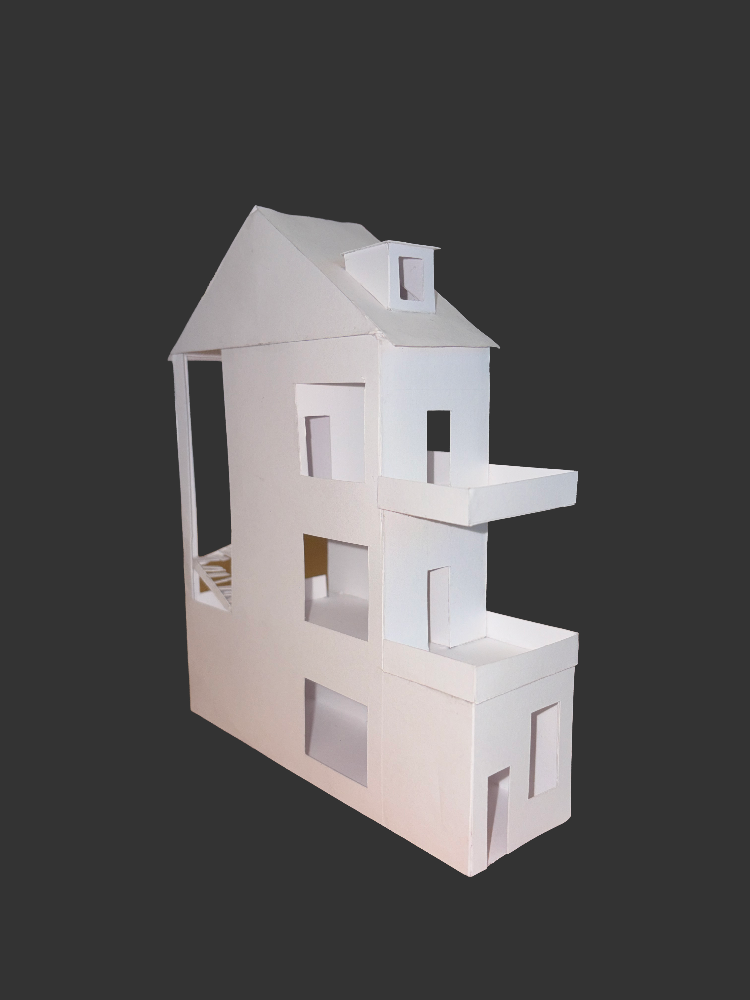
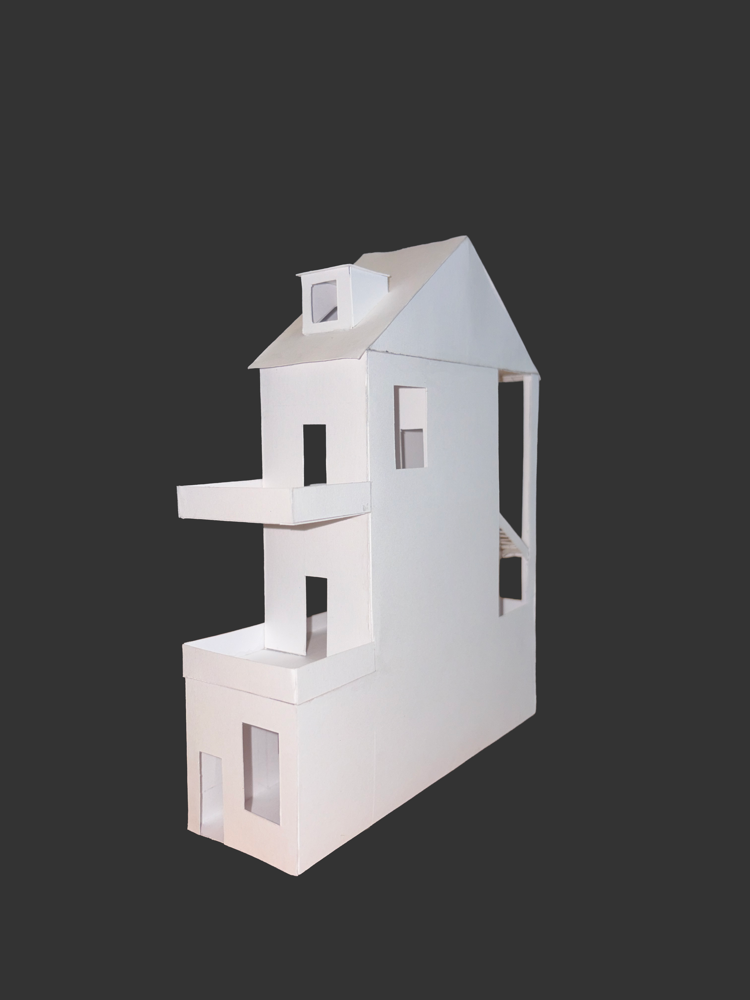
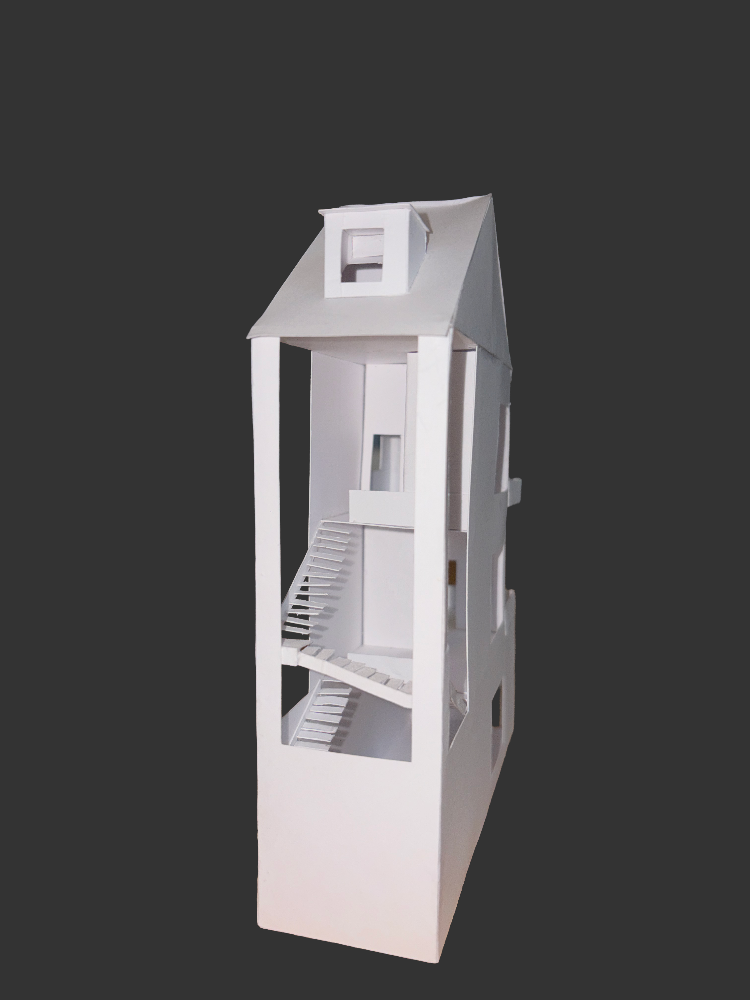
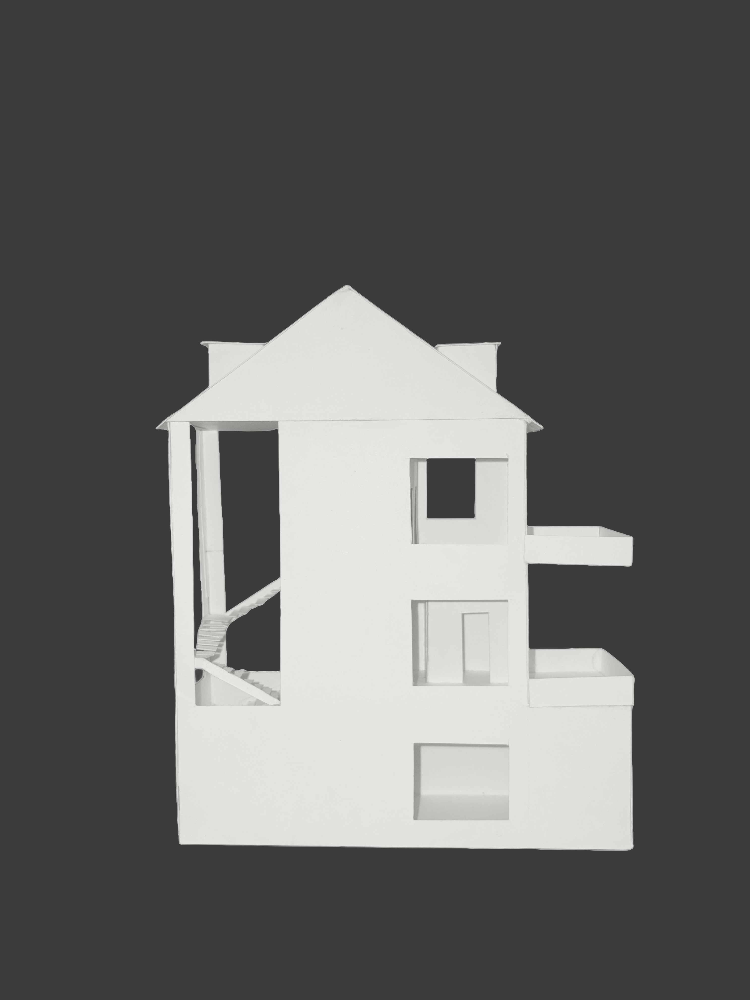
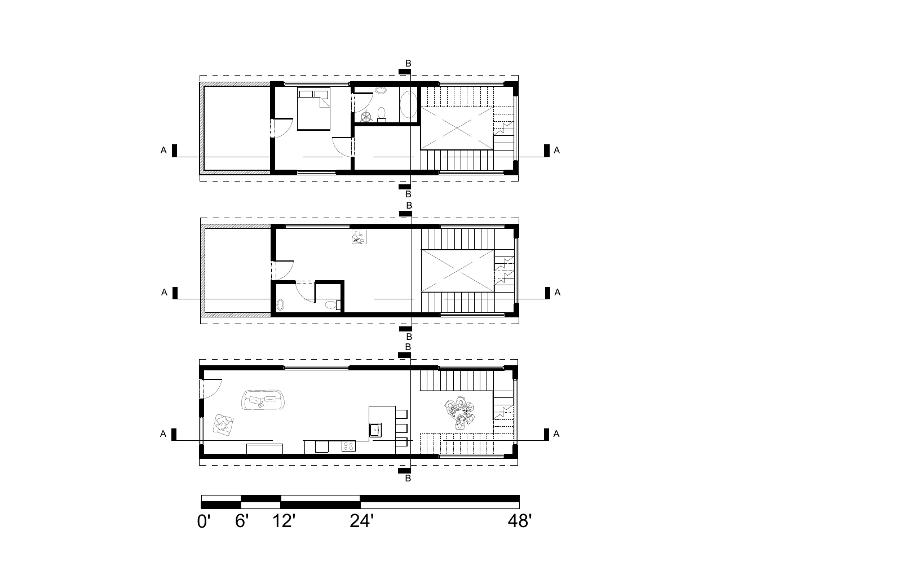
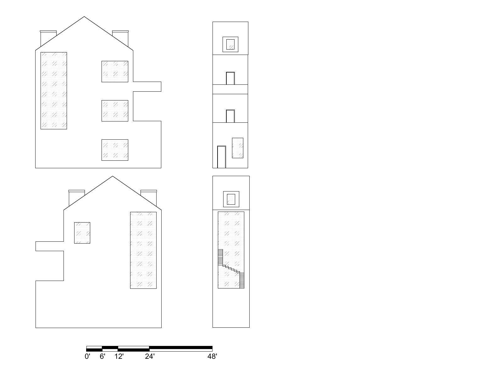
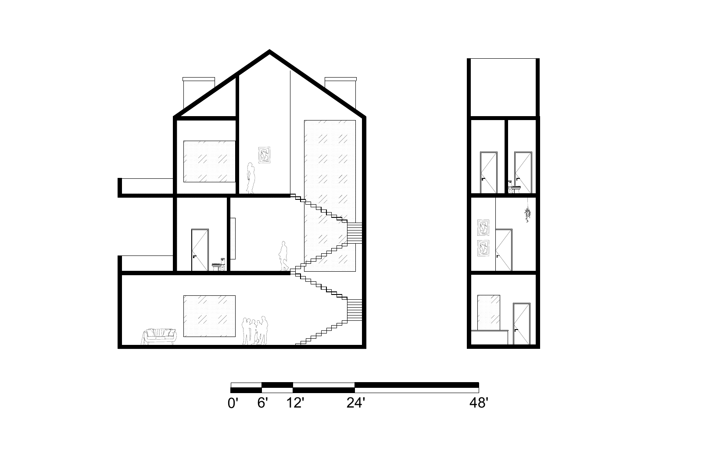

Jutaku House · ARC 101: Design I · Fall 2026
Between House
Between House is a Jutaku home designed for a hypothetical neighborhood, with student-designed homes grouped into blocks by studio, each with 12 students. The brief limited each home to 48 feet in height, 15 feet in width, and 48 feet in depth, while requiring it to respond cohesively to neighboring houses and follow site restrictions. I organized the house around an art studio positioned centrally, both vertically and horizontally—giving Between House its name. The design also prioritizes natural light within the constraints of closely spaced homes.
University of Miami School of Architecture
Faculty: Crystal Torres and Sebastian Eiler
Drawings, models, and photographs by Margo Medeiros. Individual project.
View the drawings ↗Model studies



Architectural drawings
Floor plans
Open floor plans PDF ↗ (new tab)
Elevations
Open elevations PDF ↗ (new tab)
Sections
Open sections PDF ↗ (new tab)